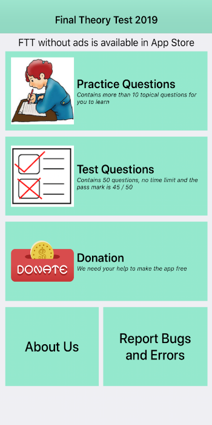
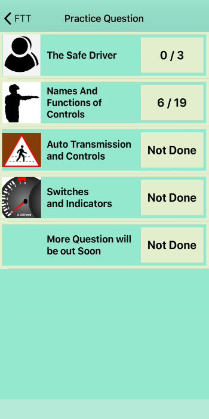
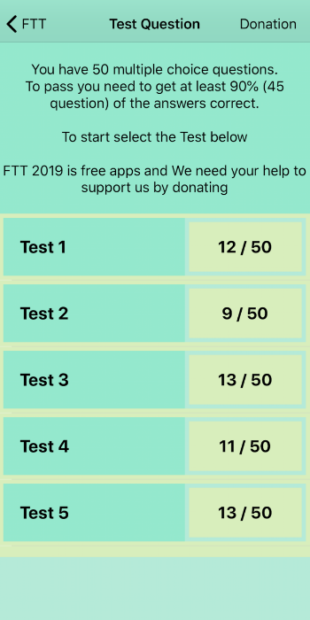
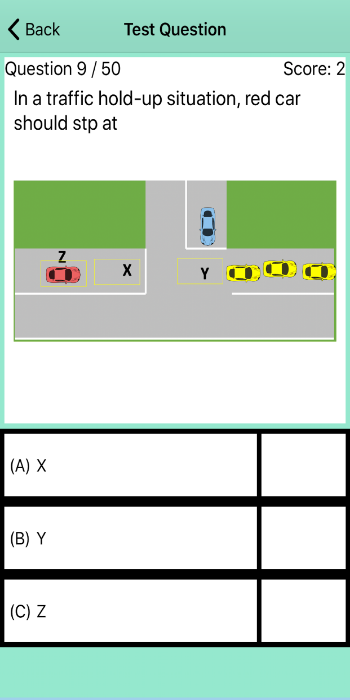
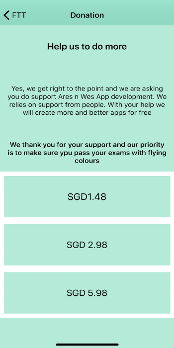

The next step after BTT is to sit and pass your Final Theory Test (BTT). The FTT 2019 Final theory test app is designed to let your practice similar test questions that will be coming out.
This method of studying using FTT app is a convenient and interactive way for you to understand and memorise the question.